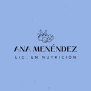

Lic. en Nutrición • Alimentación Real • Sin Dietas

Ana Inés Menéndez, Lic. en Nutrición, te acompaña a construir una relación sana con la comida. Educación alimentaria real, planes personalizados y hábitos que duran. Sin dietas de moda, sin sufrimiento.
Un enfoque basado en la educación alimentaria y los hábitos sostenibles. Porque la salud no es una dieta, es un estilo de vida.
Un plan de alimentación diseñado para vos, tu cuerpo y tu estilo de vida. Sin restricciones absurdas, con alimentos que te gustan y objetivos alcanzables.
Aprendé a entender los alimentos y a tomar decisiones conscientes. El conocimiento es la herramienta más poderosa para cuidar tu salud de por vida.
Cambios reales que podés mantener en el tiempo. Nada de modas ni extremos. Construimos juntos una rutina alimentaria que encaje con tu vida.
Volvemos a lo básico: alimentos naturales, sin ultraprocesados, con placer. Comer bien no tiene que ser aburrido ni complicado.
Atención por videollamada para que la distancia no sea un obstáculo. Recibís el mismo acompañamiento profesional desde donde estés.
Un primer encuentro para conocer tu historial, tus objetivos y tu relación con la comida. Sin juicios. El primer paso hacia una mejor versión de vos.
No existe una dieta universal. Ana Inés trabaja desde la educación y la personalización para que puedas construir hábitos que funcionen para vos específicamente, sin pasar hambre ni renunciar a lo que te gusta.
Escribile a Ana por WhatsApp o Instagram y coordinan juntos el día y la modalidad que mejor se adapte a vos. El primer paso es el más importante.
11 3199-1194
@nutri.anamenendez